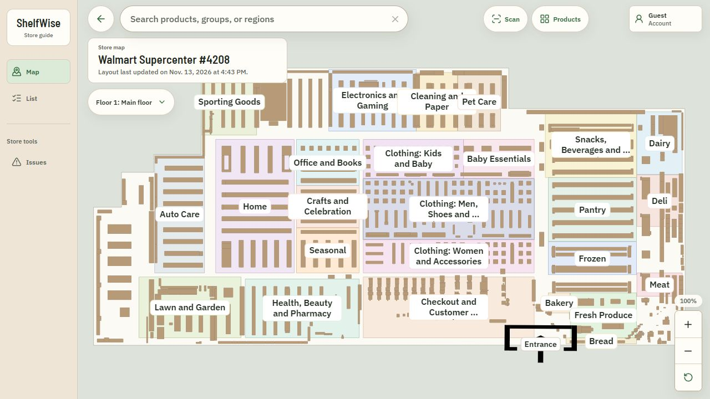

A clearer picture
of the store.
ShelfWise connects store layouts and product information in one interactive map. Less guesswork for shoppers. A shared point of reference for the people who keep a store running.
See how it works
The problem
Knowledge lives with people.
In retail, knowing where things belong often comes with experience. New hires and employees covering an unfamiliar section may not have that context. Organizational mistakes take time to correct, and experienced staff are interrupted to fill the gaps. Shoppers face a similar problem: even with aisle numbers and signs, finding a particular item in an unfamiliar store can be difficult.
ShelfWise makes that knowledge visible. It brings the physical layout and the information attached to it into a central interface, so a product’s location is more useful than a name in an inventory database.
The approach
One map, shared context.
Store managers can design maps organized into sections and subsections, then associate products with those places. Employees can maintain product details and organization information as they work. Shoppers can explore a store, search for products, and see where matching items are located.
Product information—including pricing, availability, and promotions—gives the map context. This helps shoppers make informed decisions and gives employees a visual reference when answering questions or working in an unfamiliar area. The project is designed to reduce dependence on informal knowledge, giving staff more time for the tasks that need their attention.
The application is available through a browser. React Native and Expo support the project’s cross-platform approach; the linked web deployment is the version available here, with no download required.
Behind the map.
Project technology stack
Expo Router · Web and mobile UI
Typed endpoints · Sequelize
Inventory, layouts, and media
View libraries and development tools
- Frontend
- React, React Native, Expo Router, react-native-svg, react-native-reanimated, react-native-gesture-handler
- Backend
- Node.js, Express, Sequelize, cors, multer, cheerio, dotenv
- Languages and storage
- JavaScript, TypeScript, PostgreSQL, Amazon S3
- Development and delivery
- GitLab, VS Code, AWS services; web demo available on Render
The capstone
University of Utah · 2026
ShelfWise is a senior capstone project by Will Black, Conner Francis, Bradley Lund, and Yi Yang. The team brings together human-centered design, networking, backend development, and frontend interface work. This site introduces the project and its contributors to academic and industry reviewers, and provides a quick path to trying the system.
Meet the people behind itTake a look around.
Start with the user tutorial, then explore the map for yourself.